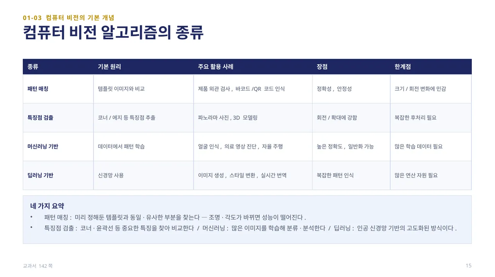
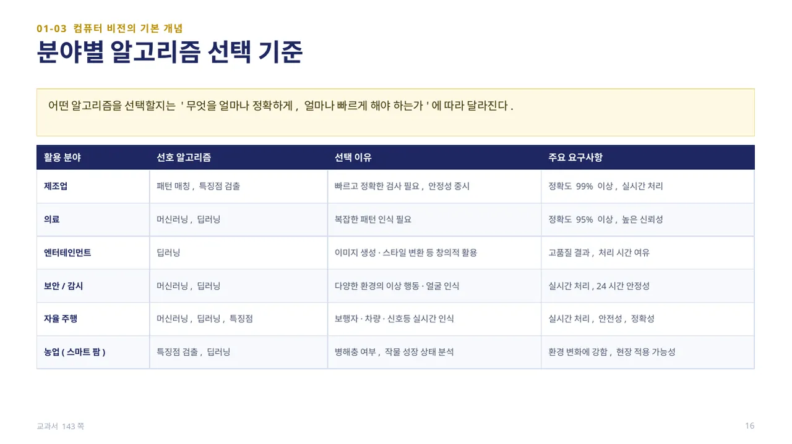
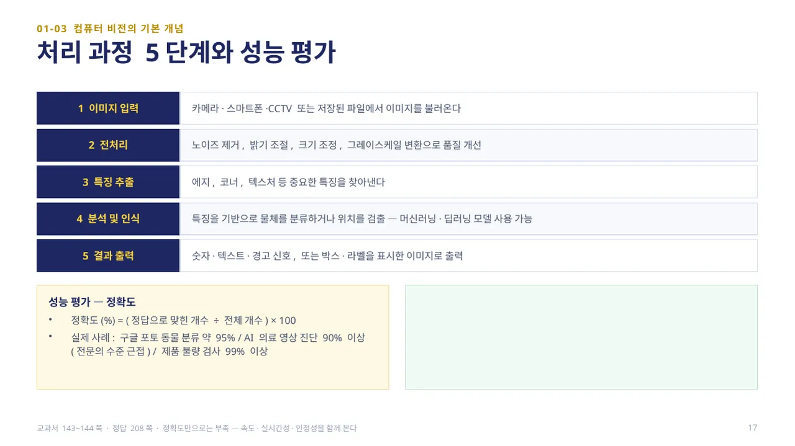
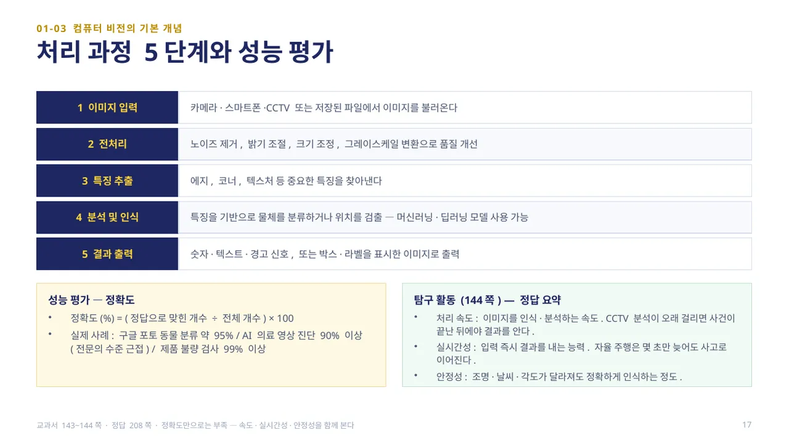

중단원 01. 컴퓨터 비전 개요 · 134–146쪽 소단원 03. 컴퓨터 비전의 기본 개념· 140–144쪽
이 웹 주제의 연계 범위: 142–146쪽
교과서 142–146쪽
알고리즘·처리 과정·평가 기준
정확도뿐 아니라 처리 시간도 비교하세요.

컴퓨터 비전에서는 이미지 속 정보를 분석하고 이해하기 위해 다양한 알고리즘이 사용됩니다. 패턴 매칭은 템플릿 이미지와 비교하는 방식으로 제품 외관 검사·바코드 인식에 쓰이며 정확하고 안정적이지만 크기·회전 변화에 민감합니다. 특징점 검출은 코너·에지 등 특징점을 추출하는 방식으로 파노라마 사진·3D 모델링에 쓰이며 회전·확대에 강하지만 복잡한 후처리가 필요합니다.
머신러닝 기반 알고리즘은 데이터에서 패턴을 학습해 얼굴 인식·의료 영상 진단·자율 주행에 쓰이며 높은 정확도와 일반화가 가능하지만 많은 학습 데이터가 필요합니다. 딥러닝 기반 알고리즘은 신경망을 사용해 이미지 생성·스타일 변환 등 복잡한 패턴 인식에 강하지만 많은 연산 자원이 필요합니다. Ⅲ단원에서 배운 머신러닝·딥러닝의 ‘학습’이 바로 이 알고리즘들의 기반 원리입니다. (교과서 142쪽)

어떤 알고리즘을 선택할지는 ‘무엇을 얼마나 정확하게, 얼마나 빠르게 해야 하는가’에 따라 달라집니다. 제조업은 빠르고 정확한 검사가 필요해 패턴 매칭·특징점 검출을 선호하고(정확도 99% 이상, 실시간 처리), 의료는 복잡한 패턴 인식이 필요해 머신러닝·딥러닝을 선호합니다(정확도 95% 이상, 높은 신뢰성).
보안·감시와 자율 주행은 실시간 처리와 안정성이 중요해 머신러닝·딥러닝(및 특징점 검출)을 함께 사용하고, 엔터테인먼트는 창의적 활용을 위해 딥러닝을 주로 사용합니다. 스마트 팜 같은 농업 분야는 환경 변화에 강한 특징점 검출·딥러닝을 활용합니다. (교과서 143쪽)

컴퓨터 비전은 보통 다섯 단계로 처리됩니다. ①이미지 입력(카메라·스마트폰·CCTV 또는 저장된 파일에서 불러오기) → ②전처리(노이즈 제거, 밝기 조절, 크기 조정, 그레이스케일 변환) → ③특징 추출(에지·코너·텍스처 등 중요한 특징 찾기) → ④분석 및 인식(머신러닝·딥러닝 모델로 분류·위치 검출) → ⑤결과 출력(숫자·텍스트·경고 신호, 또는 박스·라벨을 표시한 이미지)입니다.
성능 평가의 대표 지표는 정확도입니다 — 정확도(%) = (정답으로 맞힌 개수 ÷ 전체 개수) × 100. 실제 사례로 구글 포토 동물 분류는 약 95%, AI 의료 영상 진단은 90% 이상(전문의 수준에 근접), 제품 불량 검사는 99% 이상입니다. 하지만 정확도만으로는 부족하며 처리 속도·실시간성·안정성도 함께 보아야 합니다.
탐구 활동(144쪽): 처리 속도, 실시간성, 안정성이 각각 무엇을 의미하는지 예를 들어 설명해 봅니다.
답 보기답 숨기기

처리 속도 — 이미지를 인식·분석하는 속도입니다. CCTV 영상에서 한 장면을 분석하는 데 오래 걸리면 사건이 끝난 뒤에야 결과를 알게 되어 의미가 줄어듭니다. 실시간성 — 영상이 입력되는 즉시 결과를 내는 능력입니다. 자율 주행차가 신호등이나 보행자를 몇 초만 늦게 인식해도 사고로 이어질 수 있습니다. 안정성 — 조명·날씨·각도가 달라져도 정확하게 인식하는 정도입니다. 얼굴 인식 시스템이 마스크를 쓰거나 어두운 곳에서도 사람을 제대로 알아본다면 안정성이 높은 것입니다. (정답 208쪽)
 인공지능 파이썬 실무
인공지능 파이썬 실무